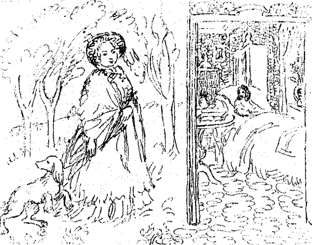
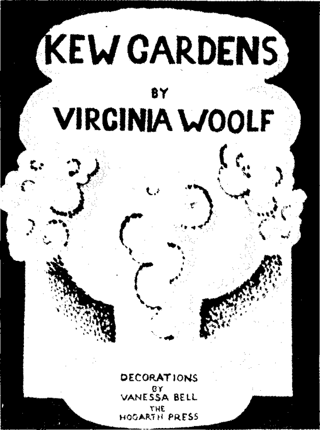
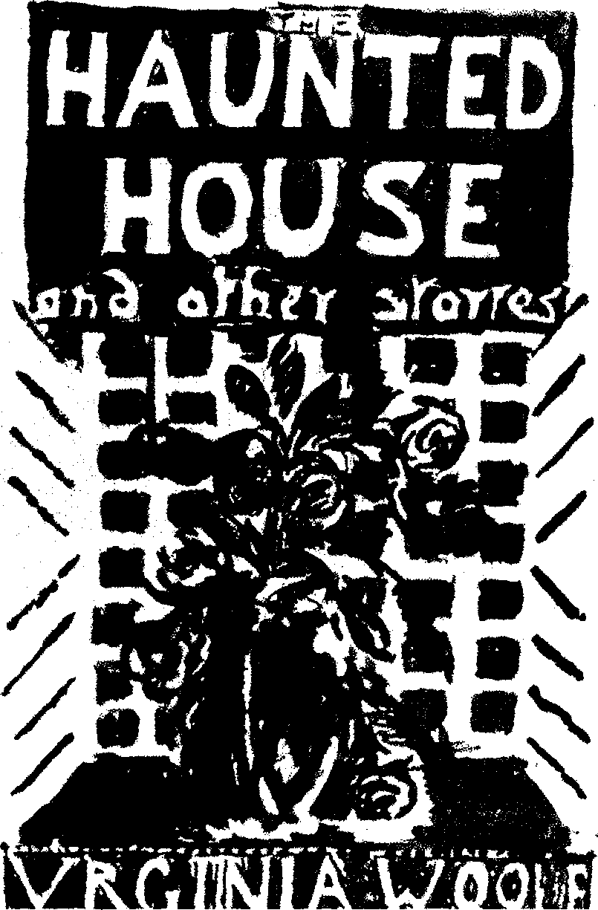
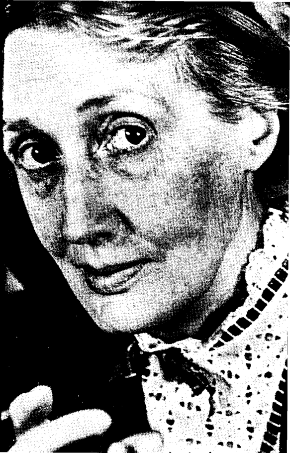

Bölüm 18
Flush ve Virginia Woolf’un Öyküleri
Virginia Woolf, dokuz romanı, kadın sorunlarıyla ilgili iki kitabı, eleştiri yazıları, denemeleri ve şimdi ele alacağımız öyküleri dışında, Roger Fry ile Flush’ın yaşamöykülerini yazdı. Fry, yazarın yakın arkadaşlarından tanınmış bir ressamdı. Flush’ın kim olduğunu da birazdan anlayacağız. 1934’te ölen Fry, yarı şaka yarı ciddi, Virginia Woolf’un onun bir yaşam öyküsünü yazmasını istemişti. Ressam ölünce, ortak arkadaşları da bu isteğe katıldılar. Virginia Woolf için böyle bir kitap yazmak bir vefa borcuydu. Hattâ güncesinde, bu yaşamöyküsünü, ikisinin dostluğundan doğacak bir çocuk saydığını söyledi. Kitap 1940’da yayınlandı. Bir yıl sonra da Virginia Woolf kendini öldürdü. E.M.Forster, belki de Fry’ı yakından tanıdığı için, bu kitabı tutan ender kişilerden biridir. Forster, Virginia Woolf’un yaşamını yazdığı adama saygısından ötürü, kendi kişiliğini tümüyle sildiği, yalnız Fry üzerinde durduğu için, ayrıca över bu biografiyi. Bizler ise, keşke Fry ile ilgili olarak, kendisinden de biraz daha fazla söz etseydi, kişiliğini bu kitaba daha çok koysaydı; ya da yaşamaya bu kadar az zamanı kalmışken, bunu değil de başka bir kitap yazsaydı deriz.
Roger Fry: A Biography’nin, Virginia Woolf’un bizi en az ilgilendiren kitabı olduğu hiç kuşku götürmez. 1933’te yayınlanan Flush: A Biography ise, yüz sayfadan bile daha kısa küçük bir başyapıttır. Oysa, Virginia Woolf’un, en az bilinen, okuyanlar çok sevdikleri halde en az okunan kitaplarından biridir her nedense. Eleştirmenlerden çoğu, ne yazık ki, yeterince durmamışlardır bu kitap üstünde. Duranlar ise, Jean Guignet gibi, kitabı küçümsemişlerdir genellikle. Ancak E.M. Forster “tam bir başarı” (“a complete success”) diye niteler kitabı.
Flush, ünlü şair Elizabeth Barrett Browning’in köpeğinin adıdır. Bu şairin Aurora Leigh adlı, bir romandan bile daha uzun şiiri üstüne yazdığı denemeden de anlaşıldığı gibi, Virginia Woolf, Elizabeth Barrett Brovvning’e büyük ilgi duyar. Victoria Çağında kadınlara yapılan baskıların bir kurbanı sayardı onu. Elizabeth Barrett, o dönemin zorba denilecek kadar otoriter aile reislerinden biri olan, üstelik kızına karşı sağlıksız bir tutku duyan babası tarafından, hasta olduğu bahanesiyle, eve kapatılmıştı. Bu şairi, kendisinden çok daha yetenekli başka bir şair kurtardı. Elizabeth Barrett ile Robert Browning’in nasıl tanışıp seviştiklerini; gizlice evlenip, yanlarına Flush’ı da alarak, İtalya’ya nasıl kaçtıklarını; Floransa’ya yerleşip nasıl mutlu olduklarını, herkes -yazınla pek ilgisi olmayanlar da bilir.3 Çünkü bu ünlü aşk öyküsü üstüne tiyatro oyunları yazılmış, filmler bile yapılmıştır. Virginia Woolf, bu güzel aşk öyküsünü, inanılmaz bir ustalıkla, bir de Flush adlı köpek açısından anlatır.
Virginia Woolf, geleneksel yaşamöyküsü yazarlarının yöntemine öykünerek, ilkin Flush’ın atalarını ve cinsini; bu cins köpeklere verilen “spaniel” adının hangi sözcüklerden kaynaklandığını, şakadan bilimsel tavırlar takınarak açıklar. Flush’ın, köpekler arasında tam bir aristokrat sayılması gereği anlaşılır bu açıklamalardan. Sonra, Flush’ın doğumuna ve çocukluk günlerine geçer: Ne yazık ki, tüm araştırmalara karşın, onun hangi ay ve o ayın hangi günü doğduğunu tam saptamanın yolu bulunamamıştır. Ama 1842 yılının ilk aylarında dünyaya geldiği konusunda hiç kuşku yoktur. Flush’ın ilk sahibi, Victoria Çağı’nın tanınmış yazarlarından, kırsal bölgede oturan Miss Mary Mitford’dur (1787-1855). Flush çocukluğunu, bu sevecen yaşlı kadının yanında mutluluk içinde geçirir. Kırlarda koşar, hoplar zıplar; av köpeği cinsinden olduğu için de, tavşan ya da tilki kokusu alınca, alesta duruma gelir. Flush’ı bir bakıma insanlaştıran -köpek besleyenlerin bildiği gibi, her köpek biraz insandır zaten- Virginia Woolf, onun köpek olduğunu hiç unutmadığı için, Flush’ın kokuları algılaması konusunda özellikle durur.
Kahverengi tüylü, ama daha sonraları sahibi olacak Elizabeth Barrett Browning’in dediği gibi, güneş ışığında tepeden tırnağa altına dönüşen yakışıklı Flush, çok genç yaşta baba olarak, erkeklik gücünü kanıtlar. Flush’ı satın almak isteyenler vardır. Ama Miss Mitford çok yoksul olduğu, o para çok işine yarayacağı halde, onu satmaya yanaşmaz. Flush’ı, zorba bir babanın gardiyanlığı altında, hasta odasında bir çeşit mahpusluğa mahkûm, ünlü şair Miss Elizabeth Barrett’e armağan etmeye karar verir. Çünkü “Flush was worthy of Miss Barrett; Miss Barrett was worthy of Flush” (Flush, Miss Barrett’e; Miss Barrett de Flush’a lâyiktir). Miss Mitford’un Londra’ya götürdüğü Flush, Barrett ailesinin Wimpole Street’teki büyük evinde, o güne değin hiç görmediği şeyler görür; hiç koklamadığı kokular koklar. Bu görüntülerle kokuların hepsine zamanla alışır da, ilk kez hasta odasında kokladığı kolonya kokusunu son derece nahoş bulur, buna aslâ alışamaz.

Vanessa Bell’in Flush için deseni: Miss Mitford Flush’ı Elizabeth Barrett’e getiriyor.
Miss Mitford, onu bu çirkin kokulu yabancı odada bırakıp gidince, Flush büyük bir bunalıma kapılır. Yeterince yiyeceği olmadığı halde, onu kendi tabağından besleyen, ona bakan, onu seven, sırasında onu döven yaşlı hanımı, onu terk etmiş, onu yapayalnız bırakmıştır. Flush acılar içinde ulumaya başlayınca, onu çağıran bir ses duyar. Hasta yatağından ona seslenen Miss Barrett’in yanına gider. Köpekle şair kadın, birbirilerine bakıp, derin bir hayrete düşerler. Çünkü çarpıcı bir benzerlik vardır aralarında: Birinin kulakları, ötekinin lüle lüle bukleleri, yüzlerinin iki yanından aynı biçimde sarkmaktadır; ikisinin de, ışıltılı kocaman gözleri vardır; ikisinin de ağzı büyükçedir. Flush, hop diye zıplayıp, yatağın ayak ucuna yerleşir. Bundan böyle aslâ ayrılmayacaktır oradan. Flush, Wimpole Street’te yaşamaya başlayınca, Londra’nın bambaşka kokularını algılamakla kalmaz; sınıf bilincine de varır. Kimi köpeklerin aşağı sınıftan, kimi köpeklerin yüksek sınıftan olduklarını; ve kendisinin kesinlikle yüksek sınıftan geldiğini, hattâ aristokrat bir köpek olduğunu anlar.
Yeni hanımına düşkünlüğüne karşın, bütün gün yatağında yazı yazan bir hastanın odasında kapalı yaşamak; ancak belirli ihtiyaçları için, hizmetçi Wilson tarafından günde iki kez kapının önüne çıkarılmak, hiç de kolay gelmez Flush’a. Kırsal bölgedeki özgür yaşamını öyle özler ki, yoğun bir strese girdiği; Miss Barrett ile arasındaki sevgi bağının nerdeyse kopacak kadar gerginleştiği gelip geçici anlar da olur. Flush’ın hanımının babası Mr. Barrett’den ödü kopması da stresini arttıran bir öğedir. Mr. Barrett odaya girince, Flush ya yatağın altına kaçar ya da kanepelerin arkasına gizlenir. Mr. Barrett, kızının odasına tepsiyle çıkarılan yemekleri hastanın yiyip yemediğini kontrol etmek için, her akşam oraya gelir. Miss Barrett’in bu yemeklerin çoğunu Flush’a ikram ettiğinden habersizdir. Kızı iyi yediği için, yatağın yanında diz çöküp dualar ederek, Tanrıya şükreder her gece.
Miss Barrett ile birlikte yaşamak, onun tarafından sürekli eğitilmek, onun yatağının ayak ucunda, başını Eski Yunanca koskocaman bir sözlüğe dayayarak uyumak, Flush’ın psikolojik yapısında büyük değişikliklere neden olur. “İnsan duygularına karşı aşırı bir duyarlılık” (“an excessive appreciation of human emotions”) elde eder. Havlamak ya da ısırmak gibi hayvansal içgüdülerinde dikkati çeken bir azalma görülür. Hanımı, yatağının ucunda yatmasına izin vermezse, sabahlara kadar uyumaz; onun eliyle beslenmezse, yemek yemeği reddeder, vb. Kadın şair ile köpeği arasındaki sevgi, günden güne artmaktadır. Elizabeth Barrett, Flush’ı Eski Yunan mitolojisinin Faunus’una benzeterek, onu yücelten şiirler yazar. Böylece üç mutlu yıl geçer.
Ne var ki, kader, Flush’a ağır bir darbe indirmek üzeredir. 1845 yılının Ocak ayının ilk günlerinde bir mektup gelir Miss Barrett’e. Ona yığınla mektup gelmektedir her gün. Ama hanımı bu mektubu açıp okumaya başlayınca, bunun başka bir mektup olduğunu Flush hemen anlar. Elleri hafif titreyerek, Miss Barrett, mektubu ilk kez hızla, ikinci kez ağır ağır okur; sonra bir kez daha okur. Beş ay boyunca, o mektuplar sürekli gelir. Gerçi Miss Barrett köpeğini dalgın dalgın okşar ara sıra; ama o mektuplar geldikçe Flush, hanımının yaşamından silindiğini; artık unutulduğunu hisseder. 21 Mayıs 1845’te, mektupları yazan adam, yani Robert Browning, hasta odasına ilk kez ayak bastıktan sonra, ilkin her hafta, sonra haftada iki kez, hep aynı saatlerde gelir. Kendi gelmediği günler de, mektupları gelir, çiçekleri gelir. Flush, Miss Barrett’in odasında, kendisini tiksindiren o esmer adamın kokusundan başka koku alamaz olur. Korkunç kıskançlık nöbetleri geçirir. Mahvolmuştur; “sessiz bir can çekişmeye” (“silent agony”) girmiştir. Buna karşılık Miss Barrett sanki canlanmıştır; yüzüne kan gelmiş, gözleri parlamaktadır. Tabağındaki yiyeceklerin yarısından fazlasını Flush’a vermez, hepsini kendi iştahla yer artık. Eskiden, ancak arabayla kırk yılda bir sokağa çıkarken, şimdi sokaklarda yürümekte; ailesiyle birlikte aşağıdaki salonda oturmak için, merdivenleri inip çıkmaktadır.
Flush bir yıl süreyle, yoğun bir mutsuzluk içinde, yaşamının en karanlık günlerini geçirir. 8 Temmuz 1846’da kendini tutamaz, Mr. Browning’e saldırır, bacağını vahşice ısırmaya kalkar. Gelgelelim, Mr. Browning, Flush’un diş geçiremeyeceği, demir gibi kasları olan güçlü kuvvetli bir delikanlıdır. Küçük bir el hareketiyle Flush’ı silkeleyip iter. Bu saldırının üstünde durmaya bile tenezzül etmeden, Miss Barrett ile konuşmaya devam eder. Ne var ki, Miss Barrett fena kızmıştır. Flush, uzun tüylü kulaklarına bir iki şaplak yer. Buna pek aldırmaz; ama hanımının, onu artık aslâ sevmeyeceğini söylemesi yüreğine iner. İki şairin yazışmalarında, bu olaya da değinilir. Elizabeth Barrett, onu bağışlaması üzerine Flush’ın ellerini yalayarak nasıl öptüğünü, patisini nasıl uzattığını, yüzündeki “sessiz ıstırap ifadesini” (“expression of quiet despair on his face”) görseydi, Browning’in de onu bağışlayacağını anlatır. Browning ise, ulu gönüllü davranarak, zavallı Flush’ın kıskançlığını anladığını, bu kıskançlığa saygı duyduğunu yazar.
Gelgelelim Flush, kolay kolay uslanamayacak kadar kin duymaktadır genç şaire. Düşmanıyla baş başa karşılaşmaya karar verir. Yatak odasından inip, onu sokak kapısının önünde bekler. Adam içeriye girer girmez de saldırıya geçer. Ama heyecanı yüzünden, bu saldırının sessiz kalması gerektiğini unutup havlamaya başlar. Bütün ev halkı ayaklanır, koşa koşa imdada yetişir. Hizmetçi Wilson, Flush’a bir güzel dayak atar. Saldırı sırasında kendini savunmak için parmağını bile kaldırmayan delikanlı, özellikle Flush’ı düşünerek getirdiği pastalarla, hiçbir şey olmamış gibi, Miss Barrett’in odasına çıkar. Mr. Browning’i ısırıp, hizmetçi tarafından dövülmek, Flush’ı yıkan son darbe olur.
Miss Barrett’in uzandığı sedirden günlerce sürgün edilen, yerlerde yatmak zorunda kalan Flush’ın aklı başına gelir sonunda. Robert Browning ile uzlaşmaya, hattâ onu sevmeye karar verir. Çünkü kendisinin Miss Barrett’i sonsuza değin seveceğini; Miss Barrett ile Mr. Browning’in de birbirlerini sonsuza değin seveceklerini anlamıştır. Durum böyle olduğuna göre, Mr. Browning’e kin duymak, Miss Barrett’e kin duymak gibi bir şey, onu ısırmak Miss Barrett’i ısırmak gibi bir şeydir. Düşmanıyla barıştığının açıkça anlaşılması için, hem adamın getirdiği çoktan bayatlamış pastaları zorla yer; hem de onun her zaman oturduğu, buram buram Mr. Browning kokan koltuğa yerleşir.
Flush sevgisi ve sağduyusu sayesinde bu bunalımdan yeni kurtulmuşken, çok daha küçük çapta, ancak beş gün süren başka bir felâket yaşar. Miss Barrett’n bir mektubundan öğrendiğimize göre, Eylül 1846’nın ilk günü birlikte alışverişe çıktıkları sırada, bir şebeke tarafından kaçırılır. Taylor adlı birinin yönettiği bu şebekenin işi, kendi çaldıkları ev köpeklerini, belli bir fidyeye karşılık sahiplerine geri vermektir. (Birazdan göreceğimiz gibi, Virginia Woolf, çocukluğunda böyle bir şebekede çalışan, sonraları çok varlıklı bir kuyumcu olan bir adamdan söz eder öykülerinden birinde.) Eğer fidye ödenmezse, köpeğin başı ve patileri kesilip sahibine postalanır. İkisine de bitmez tükenmez gelen bu beş gün süresince, Flush ile Miss Barrett yoğun sıkıntılar çekerler. Bir torbaya tıkılan Flush, torbadan çıkarılnca, çok pis kokulu, karanlık, rutubetli bir mahzende, bir yığın başka köpek arasında bulur kendini. Her nedense, bu köpeklerin arasında, boyuna aynı tümceyi yineleyen, çok iri bir papağan da vardır. Flush, kapının her açılışında, Miss Barrett’in ya da Wilson’un geleceğini umar; ölüm korkuları içinde bekler durur. Miss Barrett, Flush’ı bir an önce kurtarmak için, fidyeyi hemen ödemeye râzıdır. Ama babası ve erkek kardeşleri, ahlâksal ilkeler açısından bunu doğru bulmazlar. Fidye ödemenin zorbalığa ve şantaja boyun eğmek, suçluları yüreklendirmek anlamına geleceği konusunda erdemli nutuklar atarlar. Sonunda Miss Barrett kendi harekete geçer, istenilen parayı öder, köpeğini kurtarır. Sıskalaşmış, pis kokan, susuzluktan kavrulmuş Flush’ın odaya girer girmez, hanımına değil de doğru temiz su çanağına koşmasına, Mr. Browning’e bir mektubundan anlaşıldığı gibi, bir hayli bozulur.
Flush kurtulduktan hemen sonra, çok gizli ve de çok gizemli hazırlıklar başlar Miss Barrett’in odasında. Dolaplardan ve çekmecelerden çıkartılan kimi eşyalar, bu arada Mr. Browning’in mektupları, bir bavula konulur. Aileden biri gelir gelmez, o bavul hemen kapatılır, yatağın altına itilir. Miss Barrett de yatağa uzanır sanki oradan hiç kalkmamış gibi. Flush’ın tanığı olduğu bu hazırlıklarının nedenini her zaman soyadıyla Wilson denilen Lily Wilson bilir ancak. 12 Eylül 1846’da, Miss Barrett, Flush’ı yanına almadan, bir iki saat bir yere gider. Geri döndüğünde, Robert Browning ile gizlice evlendiği için, bir altın halka vardır parmağında. Bu halkayı da hemen çıkarıp saklar. 18 Eylül gecesi, Wilson yatağın altındaki bavulu, Miss Barrett de Flush’ı kucağına alır. Wimpole Street’teki evden kaçıp Robert Browning ile İtalya’ya giderler.
Tren yolculuklarında köpekleri kutulara kapatmak, Victoria Çağının barbarca geleneklerinden biriymiş. Uzun ve çok sıkıntılı bir yolculuktan sonra tren durur. İstasyonun dışına çıkartılan Flush, kutusunun kapağı açılnca, dünyanın en garip görüntüsüyle karşılaşır; hızla akan suların ortasında, Miss Barrett’i bir kayanın üstüne tünemiş bir durumda görür. Onu tehlikede sanıp hemen sulara atar kendini, imdadına koşar. Ama artık Mrs. Browning dememiz gereken Miss Barrett, tehlikede filan değildir. Çünkü durdukları istasyon Vaucluse’dür ve Mrs. Browning, şair Petrarca’nın çeşmesinin içindedir.
Browning’ler kısa bir süre Pisa’da kaldıktan sonra, Floransa’da Casa Guidi adını taşıyan eve yerleşirler. Flush artık ölümüne dek Floransa’da yaşayacak; sahipleriyle birlikte ancak birkaç haftalığına Londra’ya geri dönecek ve anayurdunu yeniden görmekten hiç mi hiç hoşlanmayacaktır. O kadar hoşlanmayacaktır ki, Carlyle’ın köpeği Nero’nun -kimileri bunu bir kaza sandıkları halde- pencereden neden atlayıp kendini öldürdüğünü anlayacaktır. İtalya’ya ayak basar basmaz, onu kendinden geçiren, sevinçten esrik eden yepyeni bir dünyanın kapıları açılır Flush’a. Ömründe görmediği görüntüleri orada görür, ömründe duymadığı sesleri orada duyar, ömründe koklamadığı kokuları orada koklar. Her şey, özellikle kokular, onu çılgına döndürür. Acayip, baharatlı kokulardır bunlar. Renkleri de vardır sanki. Kimi mordur, kimi kırmızı, kimi altın sarısı. Gerçi Flush, İtalyan köpeklerinin hepsinin soyu karışık olduğunu, kendisi gibi tam cins bir köpeğin ortalarda görünmediğini anlayınca, snob’luğundan kaynaklanan sınıf bilinci yüzünden, kendini bir süre, ayaktakımı arasına düşmüş safkan bir prens saymaya başlar. Ama aristokratlara özgü bu züppeliği uzun sürmez iyi ki; İtalya’da yaşamanın sevinci hemen ağır basar. Günden güne daha demokrat olur, bütün köpekleri kardeşi sayar. Derken, Floransa’daki o soysuz dişi köpeklerin peşine düşer, yoğun bir aşk hayatı yaşamaya başlar. Bu çapkınlık dönemini doğal karşılamak gerekmektedir elbette. Çünkü Flush ilk gençlik döneminde kırsal bölgedeyken baba olmuştur; ama sonraları İngiliz burjuvazisinin çok tutucu bir evine kapatılmış, fazlasıyla edepli bir yaşam sürdürmüştür yıllarca. Mrs. Browning’in mektuplarında anlattığına göre, şimdi Flush, Floransa sokaklarında cirit atmakta, kimi geceler eve bile gelmemektedir. Virginia Woolf’a bakılacak olursa, Floransa’da o kadar çok gezer tozar ki, John Ruskin’in bile, George Eliot’ın bile bu kenti Flush’tan daha iyi bilmelerinin yolu yoktur.
İtalya’ya gelir gelmez değişen yalnız Flush değildir. Eskiden hasta yatağına mahkûm Miss Barrett, Mrs. Browning olduktan sonra bambaşka bir insana dönüşmüş, gençleşmiş, tam sağlığına kavuşmuştur. Çevredeki kırlarda yürür, kayalara tırmanır, Chianti şarapları içer, güler söyler. İtalya’da yaşamı, özellikle ülkenin siyasal durumunu yakından izler. İngiltere’nin tutucu geleneklerine sıkı sıkı bağlı hizmetçi Wilson bile bir değişime uğrar; Dükün özel muhafız alayından yakışıklı bir ere fena halde âşık olur. Bir tek Robert Browning değişmez; çünkü yaratılış olarak nasıl olsa İngilizden çok İtalyandır o.
Ömrünün bu mutlu yıllarında, Flush ancak iki kez biraz tedirgin olur. Birinci tedirginliğinin nedeni, Browning’lerin bir oğlunun dünyaya gelmesidir. Flush, Robert Browning’in Wimpole Street’teki eve ayak basmasıyla, yaşamlarında büyük bir değişiklik olacağını sezdiği gibi, Mrs. Browning hep evde oturup dikiş dikmeye başlayınca, gene bir değişiklik olacağını, gene birinin geleceğini sezmiştir. Doğum sırasında oradan oraya telâşla koşan ev halkı, onun yüzüne bile bakmadığı, yemeğiyle suyunu önüne koymadıkları için fena halde bozulmuş, gene terk edildiği duygusuna kapılmıştır. Doğumdan sonra, Wilson onu kucağına alıp hanımının odasına götürünce, orada, Mrs. Browning’in yatağında “kımıldayan ve miyavlayan iğrenç şeyden” (‘the horrid thing waved and mewed by her side”) nefret eder ilkin. Mrs. Browning’in bir mektubunda yazdığına göre, yemeden içmeden kesilir, “on beş gün derin bir melankoliye düşer” (‘for a fortnight he fell into deep melancholy”). Ama Flush akıllı bir köpektir; hattâ gene hanımının deyişiyle “bilgedir” (“wise”). Bu yüzden Mr. Browning ile uzlaştığı, zamanla sıkı fıkı dost olduğu gibi, bebekle de uzlaşır. Çünkü Mr. Browning, Mrs. Browning’in bir parçası olduğu kadar, iğrenç bulduğu o küçük hayvan da onların bir parçasıdır. Zamanla köpekle bebek arasında sevgi bağları kurulur. Öyle içli dışlı olurlar ki, Penini denilen küçük Robert herkesten çok Flush’ı sevmeye başlar; ata binercesine onun sırtına binip gezinir.

Kew Gardens, 1919.
Flush’ı tedirgin eden ikinci neden, yaz aylarında Floransa’yı basan pirelerdir. Mrs. Browning’in mektuplarında söylediğine göre, Flush’ın pireler yüzünden çektiği acıları, işkence edilirken Savonarola bile çekmemiştir. İngiltere’den getirilen çeşitli merhemler ve tozlar, Floransalı gürbüz pireleri hiç mi hiç etkilemez. Sonunda Mr. Browning çareyi bulur; Flush’ı bir güzel kırpar. O görkemli altınımsı tüyleri yok edilince, kendini aynada gören Flush, rezil olduğunu, ne soyu sopu, ne aristokratlığı kaldığını, bir hiçe dönüştüğünü anlar. Bu arada pirelerden de kurtulduğu için, bir süre sonra çirkin görüntüsüne filozofça katlanır. Ama ispiritizma denilen işin akılla usla hiçbir ilgisi bulunmadığndan, Mrs. Browning’in merak sardığı ispiritizma seanslarına, arkadaşlarıyla birlikte bir masanın çevresinde oturup ruhları çağırmasına, masanın zangır zangır sallanmasına katlanması daha güç olur.
Bu küçük tedirginlikleri dışında, Flush, Floransa’da mutluluk içinde uzun yıllar yaşadıktan ve iyice yaşlandıktan sonra, öleceğini hisseder günün birinde. Keyifle uyukladığı, ilginç kokularla dolu sokaktan hemen kaçıp, soluk soluğa Mrs. Browning’in yanına gider. Bir iki dakika sonra, Mrs. Browning başını kitabından kaldırınca, Flush’ın öldüğünü görür.
Virginia Woolf, Elizabeth Barrett ile Robert Browning üzerine bir yığın kitaba ve iki şairin mektuplarına başvurduktan sonra, Flush’ı dört ay içinde yazdı. Ve ne gariptir ki, bize bunca haz veren bu küçük başyapıtı hiç sevmedi, yazarken de yoğun sıkıntılar çekti. 1931 yılının güncesinde der ki:
“Oh what a waste... What a bore! Four months of work and heaven knows how much reading... That abominable dog Flush... That silly book Flush!”
(Ah, nasıl da boşuna bir iş... Ne can sıkıntısı! Dört ay çalışmak ve Allah bilir ne kadar çok okumak... O nefret edilesi köpek, Flush... O aptal kitap “Flush!”)
Virginia Woolf ilk sekiz öyküsünü 1921’de, Monday or Tuesday (Pazartesi ya da Salı) adı altında yayınladı. Bunlardan ikisi, “Kew Gardens” (Kew Bahçeleri) ile “The Mark on the Wall” (Duvardaki İşaret) iki yıl önce bir dergide çıkmıştı. Leonard Woolf, eşinin ölümünden sonra, 1944’te on sekiz öyküsünü A Haunted House (Perili bir Ev) adıyla derledi. Çok daha sonraları, 1983’te, Susan Dirk, yazarın bütün öykülerini toplu olarak yayınladı.
Virginia Woolf’un öykülerine, özellikle ilk yazdıklarına, “öykü” demek doğru mudur bilemeyiz. Kimi zaman çok kısa metinlerdir bunlar. Örneğin derlemeye adını veren “Monday or Tuesday” yalnız iki sayfadır. Yazar, “Pazartesi ya da Salı” adını, bir insanın yaşamında sıradan bir gün, herhangi bir gün anlamında kullanır. Birbirinin peşi sıra hızla gelen izlenimleri, imgeleri vererek, o günün ruh hâletini çizmek ister. Ama bunu başardığını, ortaya okuyucuların anlayabilecekleri bir ruh hâletinin çıktığını söyleyemeyiz. Daha önce de değindiğimiz gibi, Virginia Woolf’un yazmak istediği yeni roman türünü anlamak açısından çok önemli olan “Modern Fiction” adlı denemesinde, insan beyninin üstüne bir sağanak altında dururcasına, her an binlerce izlenimin aktığını ve bu izlenimlerin “Pazartesi ya da Salının yaşamını biçimlendirdiğini” (“they shape themselves into the life of Monday or Tuesday) söyler. Yazar “Monday or Tuesday”in bu iki sayfasında başarılı olamamıştır belki de. Ama bu kısa metinler arasında çok güzelleri de vardır. E.M.Forster, “lovely little things” (nefis küçük şeyler) der bunlardan söz ederken. Virginia Woolf ise, 24 Aralık 1924 tarihli güncesinden anlaşıldığı gibi, bunların tam ne olduğunu pek bilmez: “I am less and less sure that they are stories or what they are” (Bunların öykü mü olduklarından ya da ne olduklarından gittikçe daha az eminim) der. Biz ise, bu metinlerin hepsine değilse bile güzel olanlarına, düzyazıyla yazılmış şiirler diyebiliriz hiç duraksamadan. Üstelik, güzel olmasalar bile Virginia Woolf’un yazması gerekiyordu bunları. Çünkü kendine özgü anlatım biçimini bulması, yepyeni bir roman türü yazabilmesi için, yapılması gereken deneyimlerdi bu metinler. Örneğin, Monday or Tuesday’de, ancak iki paragraflık kısa birer parça vardır. Birincisinin adı, “Blue” (Mavi), ikincisinin “Green”dir (Yeşil). Bunlarda, renk duyusunu sözle vermek için, romanlarında daha sonraları göreceğimiz türden empresyonist imgeler kullanır. Bu sekiz öykü, yazar olarak kendini arayan Virginia Woolf’un yaşamında bir dönüm noktasıdır. Bunların yaratmayı amaçladığı yeni roman türünün ilk örneği olan Jacob’s Room’dan tam bir yıl önce yayınlanmalarının bir anlamı vardır bu açıdan. Çünkü Virginia Woolf bu romanda kullanacağı yöntemi denemekteydi.
Bu yeni yöntemi belki de en iyi yansıtan iki öykü, “Kew Gardens” ile “The Mark on the Wall”dur. Virginia Woolf’un romanlarında olaylar dizisi diyebileceğimiz durumlar bulunmadığı gibi, bunlarda da bulunmaz. Yedi sayfa tutan “Kew Gardens”de, bir karı koca, iki çocuklarıyla birlikte, çiçekler arasında gezinmektedir. Adam ilk sevgilisini düşünür; kadın yirmi yıl önce burada resim yaparken, kır saçlı bir kadının arkasından gelip onu nasıl öptüğünü anımsar. Yanlarından iki erkek, iki yaşlı kadın, genç bir âşık çift geçer. Bunların konuşmalarından kopuk kopuk parçalar ve o güzel parktan izlenimler aktarılır. Empresyonist anlatım deneyimidir bu.
Virginia Woolf, gene yedi sayfa kadar tutan “The Mark on the Wall”da, romanlarında kullanacağı bilinç akımıyla ilgili bir deneyim yapar bu kez: Bir kış günü bir kadın, şöminenin tam üstünde, yuvarlak küçük bir leke görür. İlk kez görmektedir bunu. Düşüncelere dalar. Acaba eskiden oraya asılan bir resmin çivisinin bıraktığı iz midir bu? Kalkıp baksa mı? Ama bakması bir işe yaramayacaktır. Bir şey öğrenemeyecektir oraya bakmakla. Çünkü gerçeği saptamanın yolu yoktur. “Hiçbir şey kanıtlanamaz, hiçbir şey bilinemez” (“Nothing is proved, nothing known”). Yaşamda her şey gizemlidir; her şey gelişigüzeldir; ne olup bittiğini anlayamadan, her şey gelip geçer, yok oluverir. Duvardaki işaret, kışın bomboş bir tarlada tek başına duran bir ağacı çağrıştırır kadına. Derken, karanlıkta sallana sallana giden bir geminin direğidir o yapraksız ağaç. “Ay ışığının demir kurşunları” (“the iron bullets of the moon”) zarar veremez o ağaca. Kadın, böyle bir düşler dünyasına dalmışken, gerçekler dünyası araya girer. Kocası gelir; sokağa çıkıp bir gazete alacağını söyler; kahrolası savaştan ötürü, gazetelerde doğru dürüst haber bulunmamasından yakınır. Sonra, şöminenin üstüne bakar; duvarlarında bir sümüklüböcek bulunmasının nedenini hiç anlayamadığını söyler. Öykü, “the mark on the wall! It was a snail” (Duvardaki işaret: bir sümüklüböcekti) sözcükleriyle biter.
Virginia Woolf’un en ilginç öykülerinden biri olan ve Monday or Tuesday’de yayınlanan “An Unwritten Novel”e daha önce de değinmiştik. Burada Virginia Woolf, gerçekçi romanların başlıca kusurlarından birini alaya alır; gerçekçi geçinen romancıların yanıldıklarını, gerçeklerden hep uzak kaldıklarını kanıtlamak ister. Onların sandıklarının tam tersine, dış görüntüleri inceleyip gerçekleri saptamanın yolu yoktur: Bir tren yolculuğunda, karşısında bir kadın oturmaktadır. Yazar, kadına bakar; gerçekçi romancıların yöntemine öykünerek, yani kadının dış görüntüsüne bakarak, bir roman uydurur bu kadın üzerine. Minnie Marsh adını verdiği bu kadın, dünyanın en mutsuz insanlarından biridir. Geceleri yatağında hıçkıra hıçkara ağlamaktadır. Yirmi yıl boyunca bir erkeği sevmiş; ama adam ona ihanet ettiği için ayrılmışlar, yeryüzünde yapayalnız kalmıştır. Yaşlı annesi hastayken, ona özveriyle bakmıştır. Ne var ki, annesi öleceği gün bir şapkacı dükkânına uğradığı için, o can verdiği sırada yanında bulunamamış; bu yüzden de kendini suçlu hissetmiştir. Kadın şimdi Eastbourne’a, erkek kardeşinin evine gitmektedir. Ama yengesi onu hiç sevmez, ona karşı her zaman ters davranır. Bu ziyareti sırasında da ona ters davranacak, onu büsbütün mutsuz edecektir. Eastbourne’da, kadını hiç kimse karşılamayacaktır, vb. Gelgelelim, tren Eastbourne’a varınca, çocuksuz sandığı kadın, oğlu tarafından sevinçle karşılanır. Ana oğul, mutluluk içinde istasyondan uzaklaşırlar. Böylece Virginia Woolf, salt dış görüntülere bakarak gerçeği saptamanın yolu olmadığını ironik bir yaklaşımla anlatır bizlere.
Yazarın hiç tanımadığı bu ana oğula sevgisini dile getiren, daha önce de değindiğimiz lirik sonuna karşın, “An Unwritten Novel”e düzyazıyla yazılmış bir şiir diyemeyiz. Ama ancak iki sayfa, hattâ bir buçuk sayfa tutan “A Haunted House” salt şiirdir. Bir çift ölü, yüzyıllar önce birlikte yaşadıkları, seviştikleri eve geri dönerler anladığımız kadarıyla. “Anladığımız kadarıyla” diyoruz; çünkü bu gizemli şiirsel metni anlamak hiç de kolay değildir. Örnek olarak bir iki satır vermekle yetinelim:
“Death was in the glass; death was between us, coming to the woman first, hundred of years ago, leaving the house, sealing all the windows; the rooms were darkened. He left it, left her, went North, went East, saw the stars tum in the Southern sky; sought the house, found it...”
(Ölüm aynadaydı; ölüm aramızdaydı; ilkin kadına geldi yıllar önce. Ev terk edildi, bütün pencereler mühürlendi, odalar karardı. Erkek evi bıraktı, kadını bıraktı, Kuzeye gitti, Doğuya gitti; yıldızların Güneyin gökyüzünde döndüklerini gördü; evi aradı, buldu...)
“A String Quartet”e (Telli Sazlar Kuarteti) de düzyazıyla yazılmış bir şiir diyebiliriz. Bu dört buçuk sayfalık metinde, bir Mozart konserinden söz edilir. Konser başlamadan önce, salondaki dinleyicilerden duyulan kopuk kopuk sözler aktarılır. Sonra müzik başlar ve müziğin düşgücünü etkileşiyi, görsel imgelerle verilir:
“The pear tree on the top of the mountain. Fountain jet; drops descend. Şut the waters of the Rhone flow swift and deep, washing shadows over the silver fish, the spotted fish rushed down by the swift waters... Leaping, splashing... The yellow pebbles are chumed round and round, round and round.”
(Dağın doruğunda armut ağacı. Çeşmenin fıskiyesi; damlalar düşüyor. Ama Rhone’un suları hızlı ve derin akar... Gümüş balıkların üstünden gölgeleri yıkayıp siler; hızlı suların aşağılara sürüklediği benekli balıklar... Zıplıyorlar, suları fışkırtıyorlar... Sarı çakıl taşları, öğütülürcesine dönüyor, dönüyor da dönüyor.)
Demin de belirttiğimiz gibi, Virginia Woolf’un bütün öyküleri şiirsel metinler değildir. Hattâ Monday or Tuesday’in en uzun parçası, feminizmle ilgili “A Society”de (Bir Dernek) komedya öğelerinin ağır bastığını söyleyebiliriz: Bir derneğin üyesi olan genç kadınlar, beş yıl süreyle erkekleri incelemeye karar verirler. İstedikleri, erkeklerin uygarlığa katkılarını incelemek ve o büyük amaca, yani “iyi insanlar ve iyi kitaplar üretmek” (“producing good people and good books”) amacına gerçekten yönelip yönelmediklerini kesinlikle saptamaktır. Ancak bu saptamadan sonra eş ve anne olarak görevlerini yerine getireceklerdir. Ama genç kadınların saptamaları güvenilir bir sonuç vermez. Üstelik, aralarından biri, araştırma daha tamamlanmadan, âşık olup bir çocuk doğurur. Virginia Woolf, gençliğinde yaptığı bir şakayı anımsatan bir olay da ekler bu öyküye: Genç araştırmacılardan Rose, Etiyopyalı bir prens kılığına girip, bir savaş gemisini sözde denetler. Geminin kaptanı, bunun bir şaka olduğunun farkına vararak, Rose’u cezalandıracağını bildirir. Ama Rose bu arada bir İngiliz centilmeni kılığına girmiştir ve Kaptan onun kadın olduğunun hâlâ farkında değildir. İnce bir değnekle Rose’un poposuna altı kez çok hafif vurduktan sonra, Büyük Britanya Deniz Kuvvetlerinin onurunu rencide eden hareketin öcünün alındığını bildirir. Virginia Woolf’un tarzına pek uymayan a-tipik bir parça diyebiliriz “A Society”ye.
Virginia Woolf, insanları ve insan ilişkilerini ele aldığı öyküler de yazmaya başladı zamanla. Yazarın lezbiyen eğilimlerini yansıttığı için “Moments of Being”den (Var Olma Anları) daha önce de söz etmiştik. Julia Craye, ünlü bir piyanisttir. Çok az sayıda öğrenci kabul eder. Ona tapan Fanny Wilmot da bunlardan biridir. Miss Craye, sıradan insanların dünyasından çok uzaklarda bir müzik dâhisi, tanrısal bir varlıktır Fanny’nin gözünde. Miss Craye, âşık olduğu Fanny’ye Bach çalar günün birinde. Sonra da, genç kız heyecandan kendinden geçmişken, Slayer’in dükkânında satılan toplu iğnelerin uçlarını yeterince sivri bulmadığından yakınınca, Fanny şok geçirir. Böylesine yüce bir insanın toplu iğnelerin ucuyla ilgilenmesini aklı almaz.
“Lapin and Lapinova”da, birbirlerine âşık olan Ernest ile Rosalind evlenirler. Kendilerini gerçekler dünyasının çirkinliklerinden koruyabilmek için, çocuklar gibi, bir oyun dünyasına sığınırlar:

Leonard Woolf eşinin ölümünden sonra, 1944 te on sekiz öyküsünü A Haunted House (Perili Ev) adıyla derledi, kapak Vanessa Bell.
Onlar, cansıkıcı bir toplumun baskısı altında yaşayan insanlar değil; kırlarda özgürlüklerinin tadını çıkaran küçük hayvanlardır. Ernest, Fransızcada tavşan anlamına gelen Lapin adını alır; Rosalind de tavşanların kraliçesi Lapinova’dır. Aşklarını böylece koruyabilirler birkaç yıl. Ama günün birinde, Ernest, tavşan oyununu oynayamaz olur. O tavşan bir tuzağa düşmüş, ölmüştür. Rosalind ise, tavşanların kraliçesi kişiliğini yitirir. Yazar, öykünün en sonunda, bu evliliğin böyle sona vardığını bildirir.
“Lapin and Lapinova”da bozulan bir kadın-erkek ilişkisi ele alınırken, “Together and Apart”da (Beraber ve Ayrı) bunun tam tersi, yani belki de kurulabilecek bir kadın-erkek ilişkisi ele alınır: Roderick Searle ile Ruth Anning, Mrs. Dalloway’in evinde tanışırlar. (Ne gariptir ki, yazar, sanki Clarissa Dalloway’in kişiliği hep aklındaymış gibi, ilk romanı The Voyage Out’ta da, öykülerinin bir çoğunda da, Mrs. Dalloway adlı birinden sürekli söz eder. Hattâ “Mrs. Dalloway in Bond Street” adında, ele geçirip okuyamadığımız, Amerika’da The Dial dergisinde yayınlanan kısa bir öyküsü de vardır.) Ruth, kırk yaşlarındadır, evli değildir. Başarısız bir yazar olan Searle ise, elli yaşlarındadır ve yatalak bir eşi vardır. Ruth, bu adamdan hoşlanmaz; büyük acılar çekiyormuş gibi sahte tavırlar takınan sevimsiz bir adam sanır onu. Sonra, ansızın, nedenini hiç anlayamadan, kendini ona çok yakın hisseder. Virginia Woolf, başlıca tema’larından birine, insan ilişkilerinin “olağanüstü mantıksızlığına” (“extraordinary irrationality”) değinir bu arada.
“The Lady in the Looking-glass”da (Aynadaki Hanım) bir insanın gerçeklerle yüzyüze geldiği o korkunç an ele alınır: Isabella, ellisini geçtiği halde güzelliğini hâlâ koruyabilen, varlıklı, kültürlü bir kadındır. Yığınla dostu vardır. İlginç düşüncelerini ilginç bir biçimde dile getirmesini bildiği için, herkes ona hayrandır. Güzel bahçesinde çiçekler toplarken, kendinden çok hoşnuttur. Sonra evine girince, kendisini ansızın bir aynada görür: “She stood naked in the pitiless light... Isabella was perfectly empty” (Acımasız ışığın altında çıplaktı... Isabella tam anlamıyla bomboştu). Hiçbir düşüncesi, hiçbir dostu olmadığını; hiçbir şeyi sevmediğini; yaşlanmış, çirkinleşmiş bir kadın olduğunu anlar o an. Ve insanlar odalarına ayna koymamalı diyerek söze başlayan yazar, öyküsünü aynı tümceyi yineleyerek bitirir.
“The New Dress” (Yeni Giysi) adlı öyküde de bir ayna vardır. Clarissa Dalloway’in -gene Clarissa- evinde bir toplantıya gitmek üzere olan Mabel, aynada yeni giysisine bakar. Eski moda olduğu, öteki kadınların giydiklerine benzemediği için, özellikle seçmiştir bu modeli. Terzinin son provasında bu giysiyi beğenmiş, kendini çok çekici bulmuştur. Ne var ki, şimdi giyside bir bozukluk sezer ve bütün toplantı boyunca yeni giysisinin aslında güzel olmadığı kaygısından kurtulamaz. Zaten Mabel’de bir aşağılık duygusu vardır öteden beri. Çevresindekilerin onu hep ayıpladıklarını, hor gördüklerini sanır. Üstelik herkese gıpta eden, herkesi kıskanan bir insan bilir kendini. Kırk yaşlarında olan Mabel evlidir, iki çocuk anasıdır. Eşi pek parlak bir adam değildir. Mabel, Dalloway’lerin evindeki toplantı sırasında çektiği bütün acıları; on çocuklu yoksul bir ailede yetişmenin güçlüğünü, bütün başarısızlıklarını bir bir anımsar. Mutsuzluğunu engellemek için, bir çeşit büyü yapar; eskiden okuduğu, belleğinde kalan güzel tümceleri, sessizce tekrarlayıp durur kendi kendine.
“Solid Objects”te (Sağlam Nesneler) küçük bir tutkunun, bir adamın meslek yaşamına da, çevresindekilerle ilişkilerine de son verişi ve o adamın bu duruma hiç üzülmeyişi anlatılır: Önünde parlak bir siyasal kariyeri olabilecek çok yetenekli bir genç, günün birinde kumsalda otururken elini kuma daldırınca, yeşil bir cam parçası bulur. Bu cam parçası, çok güzeldir, pürüzsüzdür, saydamdır, bir mücevhere benzer neredeyse. Delikanlı, belki de bir prensesin gerdanlığından kopan bir zümrüttür bu diye hayaller kurar; cam parçasını evine götürüp şöminenin üstüne koyar. Derken, pürüzsüz yuvarlak küçük taşlar toplamaya başlar. Bir gün, yıldız biçiminde bir porselen parçası bulur. Arsalarda başka kırık porselen parçaları arar. Delikanlı, Parlamento üyeliğine adaydır; ama bu merakı yüzünden, seçim propagandasını yapmaktan vazgeçer, siyasal toplantılara katılmaz olur. Artık hiç kimseye ilgi göstermediği için, dostları onun evine gelmezler, onu kendi evlerine çağırmazlar. En yakın arkadaşı bile onunla görüşmez olur. Ama delikanlının bu durumlara hiç üzüldüğü yoktur. Seçimi kaybettiği gün, bir meteor parçası sandığı küçük bir demir külçe bulduğu için, bu yenilgiye hiç aldırmaz. Gerçi yazar böyle bir şey söylemez, ama bizler, o küçük “sağlam nesnelerin” siyaset alanında parlak bir kariyerden belki daha güzel ve daha kalıcı olduğunu düşünürüz.
“The Man who Loved his Kind”da (Hemcinsini Seven İnsan) komedya öğeleri ağır basar. Pritchett Ellis, yirmi yıldır görmediği eski arkadaşı Richard Dalloway ile -gene Dalloway’ler- karşılaşır; onların evine dâvet edilir. Ellis avukattır; ama çoğu müvekkillerinden ücret almaz; çünkü insanları sever, onlara yardım etmek ister her zaman. Kendini, kötülüklere ve haksızlıklara karşı savaşan bir insansever olarak görür ve insanlara karşı çok hoşgörülü, çok anlayışlı sanır. Dalloway’lerin toplantısına gelenleri hiç mi hiç sevmez. Onları fazla süslü, fazla paralı, insanları sevmeyen züppeler sayar. Kendisinin bir tek günde, onların ömürleri boyunca yaptıklarından çok daha fazla iyilik yaptığını düşünür. Derken, kendini çok beğenmiş izlenimini veren Miss O’Keefe adlı genç bir kadın, büfeden dondurma getirmesini ister. Ellis, kadının emredercesine konuşmasına fena bozulur. Oysa Miss O’Keefe, bu sıcak günde yoksul bir anneyle iki çocuğunu kapının önünde görmüş, bu dondurmaları onlara vermek istemiştir. Çünkü tıpkı Ellis gibi, o da sever insanları. Ama Ellis, yoksullara ne kadar çok iyilik yaptığını anlatmaya başlayıp, övünürcesine konuşunca, insanları seven genç kadın, bu adamı hiç sevmez. Sonunda iki insansever, birbirilerinden nefret ederek, bir daha hiç karşılaşmayacaklarını umarak ayrılırlar.
Vita Sackville-West ile ilişkisinden söz ederken, arkadaşının oturduğu Knole şatosunun ve aristokrat soyu sopunun Virginia Woolf’u bir hayli etkilediğine değinmiştik. Gelgelelim “The Shooting Party” (Av Partisi) öyküsünde, bu eski ailelere karşı bir tepki vardır bize kalırsa: Soylu Rashleigh ailesinin malikânesinde, konukların da çağrıldığı av sırasında, çirkin şeyler olur. Küçük bir ev köpeği vurulan sülünlerden birini kapınca, malikâne sahibi büyük av köpeklerini küçük köpeğin üstüne saldırtır. Bir yandan da küçük köpeği fena kamçılar; kız kardeşinin de kamçılamasını ister. “Grotesk” diye niteleyebileceğimiz bir ölüm olayı da olur: Yaşlı Miss Rashleigh, sendeleyip şömineye çarpar, yere yığılır. O sırada, Rashleigh’lerin armalarını taşıyan kalkan, şöminenin üstünde asılı olduğu duvardan kopar, ihtiyar kadının üstüne düşer, onu ezer, öldürür. Virginia Woolf, “soysuzlaştığınız için, kendi armalarınız sizi artık öldürüyor” demek istemektedir sanki. Öykünün sonunda yazar, birbirine bağlı vurulmuş sülünlerle, trenle Londra’ya giden Miss Antonia Rashleigh’nin (adlar bile birbirine benzer; çünkü Vita Sackville-West’in asıl adı Victoria’dır) karşısında oturur. Bu orta yaşlı kadının karanlık kompartmanda ışıldayan gözlerine bakınca, o gözleri “mezarın üstünde dans eden bir ailenin, bir çağın, bir uygarlığın hortlaklarına” (“ the ghost of a family, of an age, of a civilization dancing over the grave”) benzetir.
Virginia Woolf’un bir de geleneksel öykü türüne az çok benzeyen, bu yüzden de kolayca anlaşılabilen öyküleri vardır. Bunlar, yazarın amaçladığı yepyeni anlatım türüne pek uymadıklarından, ancak iki örnek vermekle yetineceğiz. En kötü romanı The Years’in Amerika Birleşik Devletlerinde çok satmasından sonra, Amerikan dergileri, büyük paralar vererek öykülerini almaya hazırdılar. Kitaplarından nerdeyse hiç para kazanamayan Virginia Woolf, bu durumdan hoşlandı. “The Duchess and the Jeweller”i (Düşes ile Kuyumcu) bunu göz önünde tutarak yazdı belki de: Oliver Bacon, yoksulluk içinde yetişmiş; çocukluğunda, çaldığı köpekleri sahiplerine paraya karşılık geri vererek geçinmiştir. Şimdi ülkesinin en varlıklı kuyumcularından biri olduğu halde, altı ayrı kasada koruduğu mücevherlerini seyrederken, daha da çok para kazanmak, bu sayede yaşamında şimdiye değin elde edemediklerine sahip olmak ister. Duchess of Lambourne, Oliver Bacon’un müşterilerindendir. Ama bu yaşlıca, iriyarı şişman kadın, fena halde kumarbaz olduğundan ve boyuna para kaybettiğinden, satın alan bir müşteri değil, satan bir müşteridir. Şimdi de incilerini satmaya getirmiştir. Kuyumcu, hiçbir işi olmadığı halde, salt kadını ezmek için, on dakika onu bekletir. Satılmaya getirilen incilerin sahte olabileceklerini çok iyi bilir. Çünkü Düşes, bundan önce de sahte mücevherleri ona yutturmaya kalkmıştır. Ama Oliver Bacon, incileri pek incelemeden, büyük bir para verip satın alır. Böyle davranmasının nedeni, Düşesin, uzun bir hafta sonu geçirmek üzere onu malikânesine davet etmesidir. Yüksek sosyeteden kişiler, başbakan bile orada olacaktır. Kuyumcu, Düşesin üç kızından birine tutkundur üstelik. Düşes gittikten sonra, tahmin ettiği gibi, incilerin sahte olduğunu hemen anlar.
“The Legacy” (Vasiyetle Bırakılan) “The Duchess and the Jeweller”den çok daha güzel bir öyküdür: Angela, bir arabanın altında kalır, ölür. Çok yakında yok olacağı içine doğmuşcasına, vasiyetnamesinde, sekreteri Sissy dahil, yakınlarına armağanlar bırakır. Ancak kocası Gilbert’e bir şey bırakmamıştır. Ne var ki, küçük defterlere yazdığı güncesini, Gilbert’ten her zaman gizlediği, sıkı sıkı sakladığı güncesini ortaya, kolayca görülebilecek bir yere bırakmıştır her nedense. Gilbert, günceyi karıştırırken ilkin kendisinden hep olumlu bir biçimde söz edildiğini görür. Ama daha sonraları, güncede ölen eşinin B.M. dediği bir sosyalistin ikide birde adı geçer. Zamanla sadece “o” diye anılan bu adam evlerine de gelmiş; Angela’ya Marx’ın ve başka sosyalist yazarların kitaplarını vermiştir. (Virginia Woolf, bu B.M.’in sosyalistliğini acaba neden böylesine vurguluyor diye merak etmemek elimizde değil.) Gilbert, son yılın güncesinde, karısının bu adamı sevdiğini, onunla geceler geçirdiğini öğrenir. Sonra adam kendini öldürmüştür. Güncenin son tümcesi bir sorudur: “Have I the courage to do it too?” (Bunu yapabilecek cesaret bende de var mı?) Gilbert, sekreter kızla biraz konuşunca, B.M.’nin bu kızın erkek kardeşi olduğunu, iki hafta önce kendini öldürdüğünü öğrenir. O zaman karısının bir kaza sonucu ölmediğini; kaldırımdan mahsus inip o arabanın altına kendini attığını anlar. Öykü şu sözlerle biter:
“He had received his legacy. She had told him the truth. She had stepped off the kerb to rejoin her lover. She had stepped off the kerb to escape from him.”
(Kendine vasiyet edileni almıştı. Ona gerçeği söylemişti. Âşığına kavuşmak için kaldırımdan inmişti. Kocasından kaçmak için kaldırımdan inmişti.
Bu öykü hem güzeldir; hem de Virginia Woolf’un aklından hiç çıkmayan intihar konusunu işlediği için, bize ayrıca ilginç gelir.
